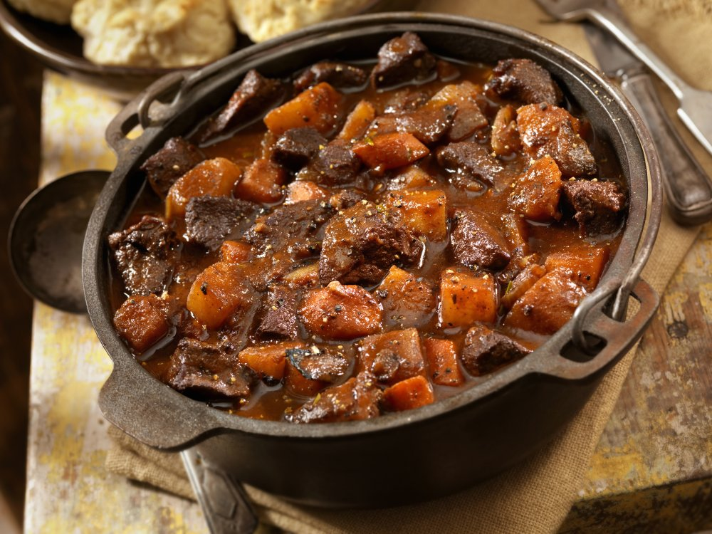

Carbonade

Description
La carbonade flamande, ou carbonnade à la flamande, est une recette de cuisine traditionnelle des cuisine belge (Flandre belge) et cuisine du Nord-Pas-de-Calais (Flandre française), variante de carbonade à base de morceaux de viande (le plus souvent de bœuf) braisés à l'étouffée avec de la bière belge ou bière du Nord-Pas-de-Calais.
Ingredients
- viande bovine 1kg
- 80g de lardons
- 2 et demie oignons
- 2 bieres
- 3 tranches de pain d'épices
- 2.5 c. à soupe de moutarde
- 1.5 c. à soupe de vinaigre de vin rouge
- 1 c. à soupe de cassonade
- 1.5 c. à soupe d'huile d'olive
- 20cl de bouillon de boeuf
- 1 feuille de laurier
- 1 branche de thym
- 1 pincée de sel
- 1 pincée de poivre
Steps
-
Épluchez les oignons et ciselez-les. Coupez la viande en gros cubes. Faites dorer les lardons sans ajout de matières grasses dans votre cocotte en fonte et réservez-les dans une coupelle.
Toujours dans votre cocotte, faites fondre 15 g de beurre avec 1 c. à soupe d'huile et faites-y blondir les oignons émincés. Ajoutez la vergeoise, mélangez le tout sans faire colorer et réservez dans un bol.
-
Toujours dans la même cocotte, ajoutez le beurre restant et l'huile d'olive. Faites dorer vos cubes de viandes sur toutes les faces.
Saupoudrez de farine et mélangez bien le tout. Si vous voulez une sauce fluide, mettez 1 c. à café rase de farine. Et si vous aimez les sauces plus nappantes, préférez une cuillère bombée !
Ajoutez les oignons et les lardons, le vinaigre, la feuille de laurier et les branches de thym. Salez et poivrez.
-
Versez ensuite la bière en prenant soin de la verser le long des parois de la cocotte de manière à ne pas « choquer » la viande avec la différence de température et éviter également ainsi que la bière ne mousse de trop.
Laissez cuire à découvert quelques minutes pour laisser l'alcool s'évaporer. Complétez avec un peu d'eau ou de bouillon de manière à recouvrir les morceaux de viande avec le liquide.
-
Tartinez vos tranches de pain d'épices avec la moutarde et ajoutez-les sur le dessus de la viande.
Portez le tout à ébullition. Baissez la température à feu doux et fermez votre cocotte avec le couvercle. Laissez mijoter entre 3 heures et 3h30. La viande doit être extra-tendre.
-
Pensez à remuer votre plat de temps en temps pour vérifier que la viande n'accroche pas au fond de votre cocotte. Si vous trouvez qu'il reste trop de sauce, retirez le couvercle de la cocotte pour la dernière demi-heure de cuisson.